1E
| Oil Pan and Oil Pump Strainer Removal and Installation |
Removal
1)Remove oil level gauge.
2)Hoist vehicle and remove engine undercover.
3)Drain engine oil. 
4)Remove exhaust No.1 pipe.
5)Remove oil filter.
6)Remove transaxle bolts (1).

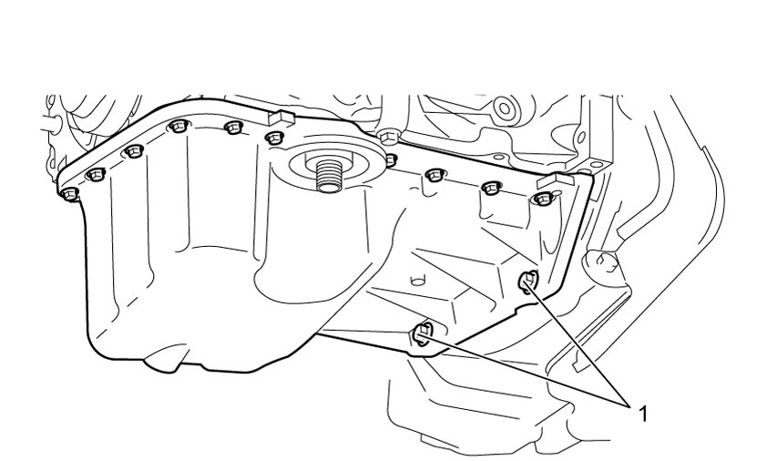
 "Expand image")
7)Remove oil pan bolts No. 1 (1) and No. 2 (2).
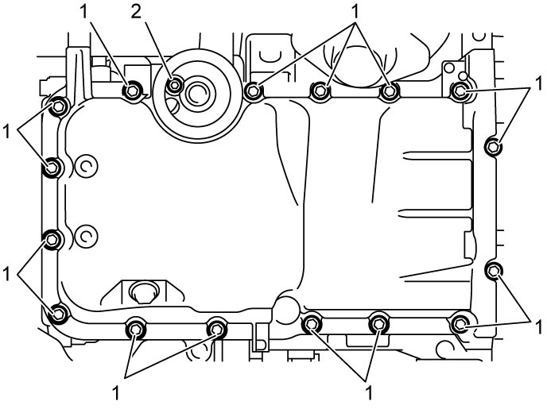
 "Expand image")
8)Using a large flat-bladed screwdriver (heavy duty type) or the like, open oil pan gradually and carefully from the lug portions and remove it from cylinder block.
9)Remove oil pump strainer (1) with O-ring (2).
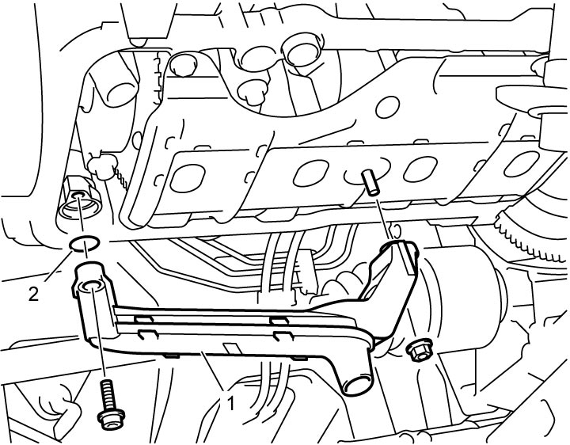
 "Expand image")
10)Remove oil pan baffle plate (1).
11)Remove stud bolt (2) from cylinder block, if necessary.
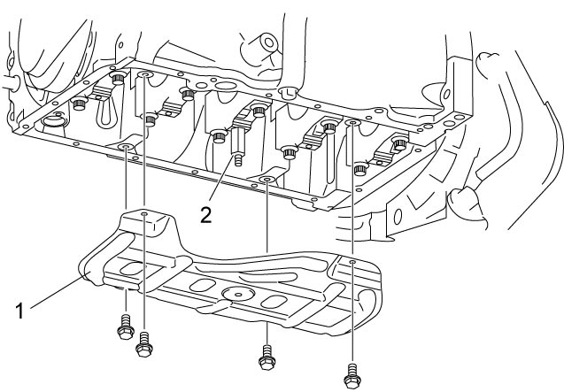
 "Expand image")
12)Remove oil filter stand (1) from oil pan using special tool and wrenches, if necessary.
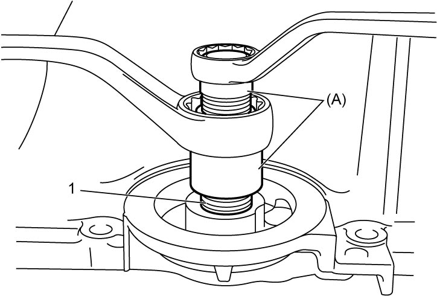
 "Expand image")
Installation
1)Clean sealing surface between oil pan and cylinder block.
Remove oil, old sealant and dust from sealing surface.
Remove oil, old sealant and dust from sealing surface.
2)Install oil filter stand (1) to oil pan, if removed, and tighten it with special tool to specified torque.
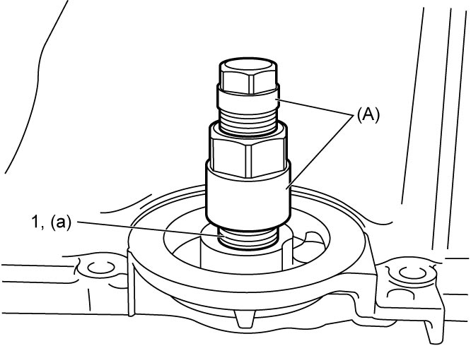
 "Expand image")
3)Install oil pan baffle plate stud bolt (1) if removed, and tighten it to specified torque.
4)Install oil pan baffle plate (2), and then tighten oil pan baffle plate bolts (3) to specified torque.
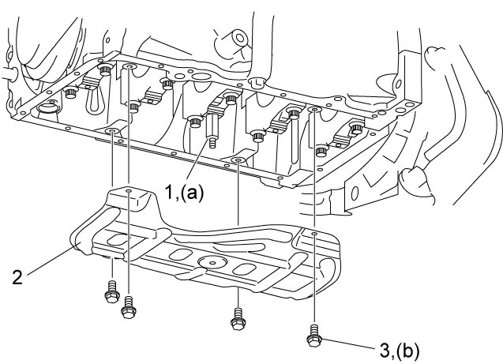
 "Expand image")
5)Apply engine oil to new O-ring (1), and install it to oil pump strainer (2).
6)Install oil pump strainer with O-ring to oil pump, and then tighten oil pump strainer bolt (3) first and oil pan baffle plate nut (4) to specified torque.
Oil pan baffle plate nut (b): 11 N·m (1.1 kgf-m, 8.5 lbf-ft)
Tightening torque
Oil pump strainer bolt (a): 11 N·m (1.1 kgf-m, 8.5 lbf-ft)Oil pan baffle plate nut (b): 11 N·m (1.1 kgf-m, 8.5 lbf-ft)
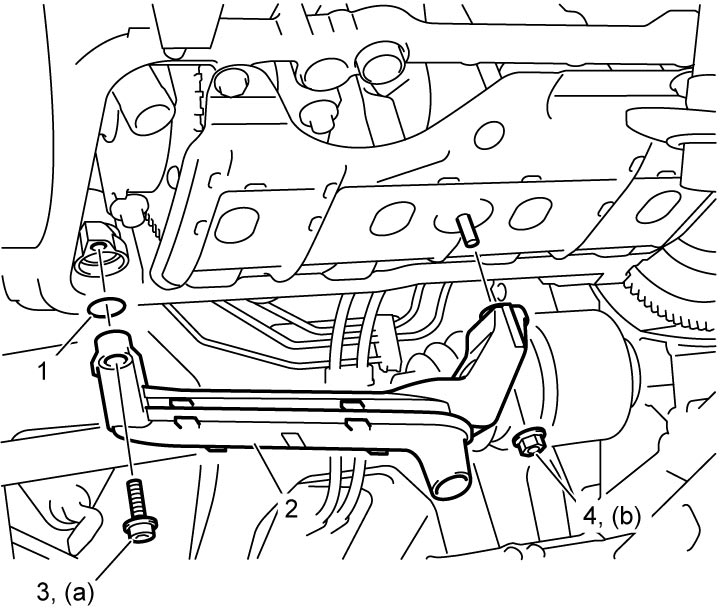
 "Expand image")
7)Check that dowel pins (1) are installed in oil pan and cylinder block.
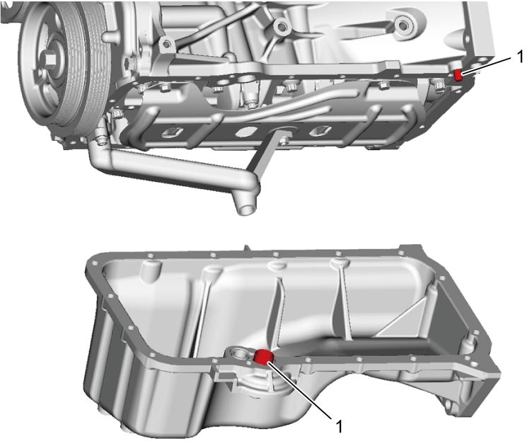
 "Expand image")
8)Clean mating surfaces of oil pan and cylinder block.
9)Apply sealant to oil pan mating surface as shown in figure.
Sealant amount for oil pan
Width “a”: 3 mm (0.12 in.)
Height “b”: 2 mm (0.08 in.)
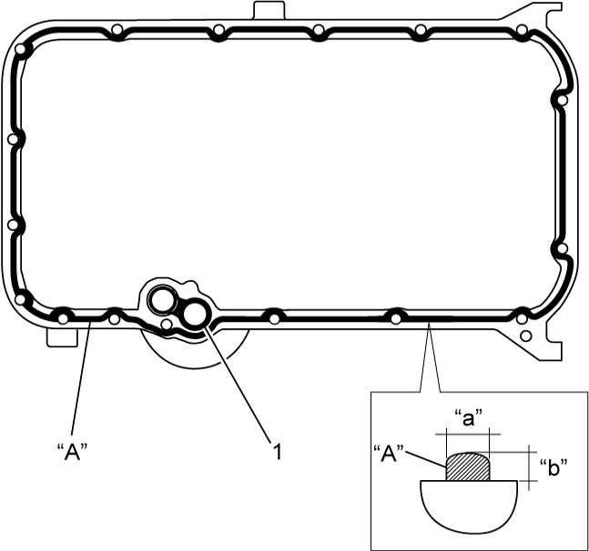
 "Expand image")
10)Within 2 minutes after applying sealant, install oil pan to cylinder block and then tighten oil pan bolts No.1 (1) and oil pan bolt No.2 (2) in numerical order (“1” – “17”) evenly and gradually to specified torque.
Oil pan bolt No.2 (b): 11 N·m (1.1 kgf-m, 8.5 lbf-ft)
Tightening torque
Oil pan bolt No.1 (a): 11 N·m (1.1 kgf-m, 8.5 lbf-ft)Oil pan bolt No.2 (b): 11 N·m (1.1 kgf-m, 8.5 lbf-ft)
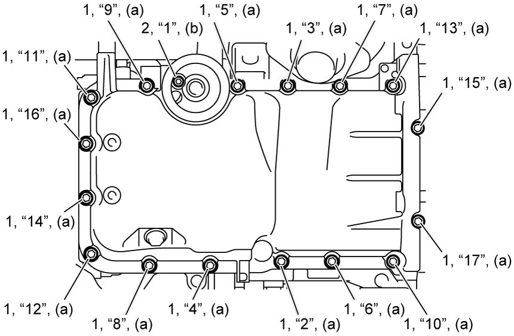
 "Expand image")
11)Tighten transaxle bolts (1) to specified torque.
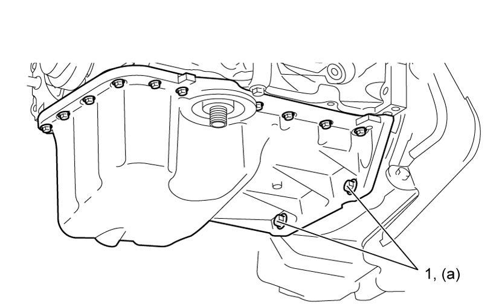
 "Expand image")
12)Install oil filter.
13)Install exhaust No.1 pipe.
14)Install drain plug and refill engine with engine oil.
15)Install engine undercover.
16)Install oil level gauge.
17)Check that there is no leakage of engine oil and exhaust gas.